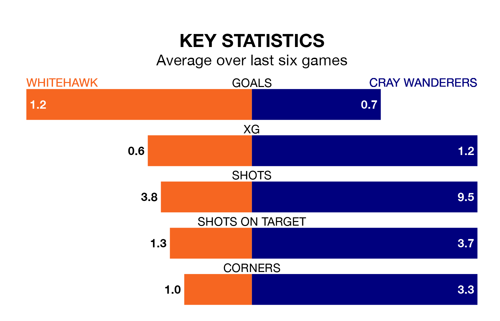

Whitehawk host Cray Wanderers on Saturday at the Enclosed Ground in Isthmian Premier Division.
In their last league match, on January 13, Whitehawk lost to Wingate and Finchley 5-1 away.
Cray also lost, 6-0 away at Billericay Town.
Cray are 17th in the table after 24 games, of which they have won six and drawn seven, earning 25 points.
Whitehawk are three places ahead of Wanderers in 14th, with seven wins and eight draws putting them on 29 points.
With 28 goals in 24 games so far this season, the visitors are scoring at below the league average rate with 1.2 goals per game. And they are conceding at an average rate, letting in 39 goals at a rate of 1.6 per game.
The Hawks are also below average scorers, with 1.5 goals per game, compared to a league average of 1.6. They have also conceded 1.5 goals per game.
The home side are in disappointing form in Isthmian Premier Division, with two wins and four losses from their last six games.
With a win and three draws over that period, Cray's form is similar – they have both taken six points from 18.
Updated: 10:02 (UTC), 19/01/24